GroupMe Concept:
Finding Relevant Messages
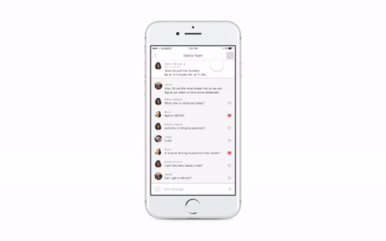
It’s intuitive to “group” the people in my life: my dance team, my housemates, high school friends, and financial accounting project group. As we spend more time with these groups, friendships form and conversations turn from pure logistics to casual, friendly chats. While I sometimes enjoy seeing funny messages, gifs, ect., sometimes I feel they are a waste of time to read. On the other hand, when it comes time to inform the group of truly important messages, I want to make sure everyone doesn’t miss this message.
Just send a DM?
My personal paint point was that I received notifications for messages that were irrelevant to me, but I didn’t want to turn notifications off because I didn’t want to miss anything important. My original hypothesis was: If GroupMe allowed users to create “subgroups” within a group chat, then users would be able to see and read what is relevant and ignore what is not.
Understanding the Problem
User Research
Different GroupMe groups serve different functions and thus have different goals: some groups are more like friend groups, while others are dominantly logistical.
Members may have different roles in groups, too: some are leaders, others are followers; some are very involved and others are just passive.
- Some users like to read messages that aren’t directed at them in order to “stay in the loop”; while others get frustrated for wasting their time.
- Users who get overwhelmed by irrelevant messages will often resort to muting the chat. However, this frustrates the rest of the chat when important information is sent out via GroupMe
- Users like to use the @mention feature to contact a subset of people in the group; they don’t mind other group members seeing this specific chat and they think creating a whole new chat is too much.
Market Research
I analyzed two salient competitors in the group communication app market: Slack and Facebook Messenger.
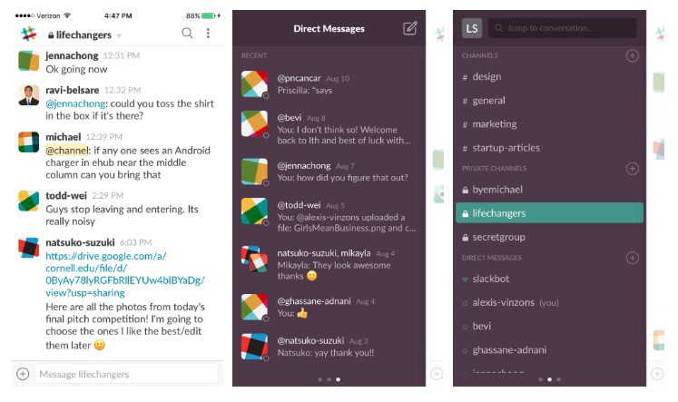 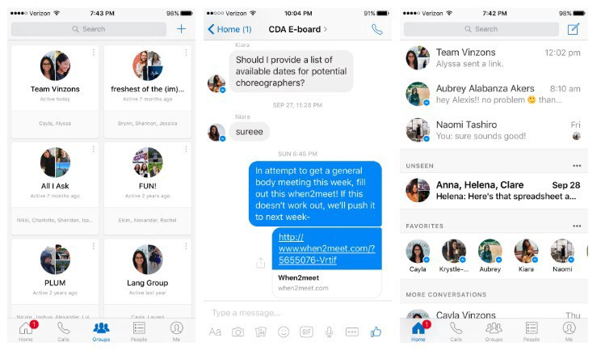- Slack- People disliked that Slack was bloated, too complicated, too formal, and is therefore not ideal for casual, friend group situations
- Facebook Messenger- People complained of a lack of organizational structure for messages and no way to rate relevance or importance, which are problems that GroupMe has.
Defining the Problem
When defining the problem space, I realized there are a multitude of factors to consider:
- A message’s relevance can be categorized as:
A. relevant and important to all (ex. link to a Google drive everyone needs to access.)
B. Not at all relevant (ex. coordinating rides to an event you are not attending)
C. Not relevant, but good to know (ex. funny stories, ect.) - The problem of message “relevance” becomes more pertinent as the size of the group grows larger
- There are two distinct sides to this problem. One is on the side of the user receiving irrelevant messages, and the other is on the side of the one sending the messages. My original hypothesis focused on the latter, but I decided to address the problem of the former.
The Problem: In large groups, people want to be able to find relevant/important information but they can’t because
- scrolling past many irrelevant messages is tedious and time consuming
- there is no organization to message content
Brainstorming a Solution
During my brainstorming session with the-one-and-only Andrew Aquino, we identified three feature spaces:
- Consolidation (ex. collapsible messages by relevance/topic, “sub-groups”, deleting messages, expiring messages, editing messages)
- Message Formatting (ex. message specific layout, font size, color; announcement header, star/pin messages)
- Categorization (ex. search bar, search filters, tags, folders)
Exploring the Solution
Firstly, Consolidation is not a solution.
The first feature space exploration involves consolidating messages into sub-groups, much like my hypothesis. I’ll admit that I couldn’t quite let go of the idea of sub-groups at first. To me, Slack channels seemed like the perfect solution to the I-don’t-care-what’s-going-on-in-your-department problem.
I explored the idea of self-forming sub-chats that combined relevant messages. I considered forming the sub-chats based on a string of @mentions, an AI that would recognize relevant discussions, or reply-based chats.
This feature seemed promising at first. It provided a means of organization to the messages, while maintaining the structure and the feel of a group chat (ie. scrolling through a conversation). This was the first problem exactly: the ability to scroll. People don’t want to scroll, they just want to find what relevant information they are looking for. This leads to the second problem: relevance. Grouping certain messages together doesn’t separate what is relevant and important from what is not. A residual problem that arose from user testing was that users felt uncomfortable that GroupMe was grouping messages on its own.
“What if GroupMe grouped them wrong? I don’t want the app making this decision for me.”
And this just amplified the first two problems of scrolling and relevance:
“How do I know what these sub-groups are about at first glance? What if I scroll through a sub-group and then realize what I’m looking for isn’t there?”
I realized the sub-group feature only addresses the subset of the problem where in certain people are @mentioned in a large group chat, which is a narrow subset of the problem space I am dealing with. After analyzing my progress and development of this feature, I realized it doesn’t solve the problem well, and decided to scrap it.
Banners for Immediacy, Pins for Importance
1. Pinned Message Banner
Interaction: How to close the banner?
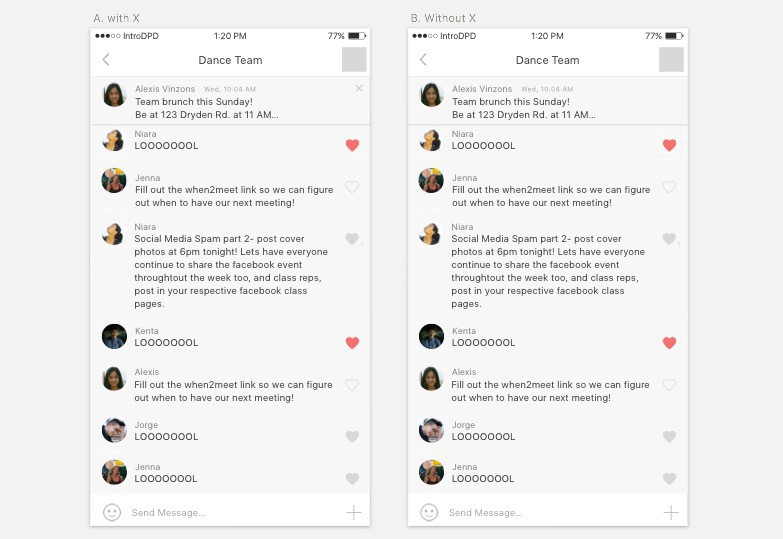“Having an X there makes it seem like it can go away and never come back.”
“I like that I can close it… but I want the reminder again. I want it just to be there.”
“I can make the decision to ignore it if I need to.”
Some users find its’ presence obstructing to the view of the group chat and would want the ability to close the banner after reading it. Other users felt uncomfortable closing it because they want to be able to refer back to it, but they also want to read the group chat unobstructed. I decided to leave out the X and play with other means of closing, such as a swipe interaction. Users felt that this interaction was lighter, most likely because it is similar to push notifications in the sense that even if you swipe them away, you can still see what was being notified.
Functionality: What shape of the banner is the most intuitive?
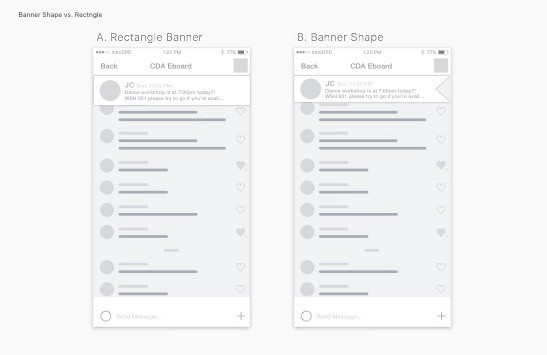Explorations of Banner Shape
I played with the idea of having a flag-shaped banner. This gave a more temporary feel to the banner; however, users thought it looked awkward. The flag shape does not really fit in GroupMe’s ecosystem, and the rectangle shape was intuitive enough for me to stick with it.
Visual Design: How can a pin indicator/icon make the message look and feel important?
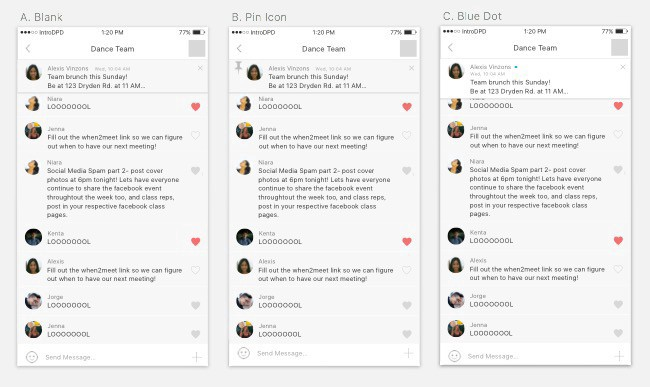Exploration of Pin Icon/Indicator
I first introduced the pin icon as a literal indication of my feature. However, users resisted the pin icon (B) because it doesn’t fit well in GroupMe’s ecosystem. However, A was too much like a regular group message and didn’t make the banner stand out against the group chat that much. After exploring the app further, I discovered that a blue dot appeared when a user was reading New Messages in a group chat, and decided to put that on the banner. Users responded well to the blue dot; even if they didn’t know it already existed in GroupMe, they liked it. It highlighted the pinned banner in a simple, subtle way, making the banner engaging but not obstructive.
Interaction and Visual Design: Weight of Expanded Message View
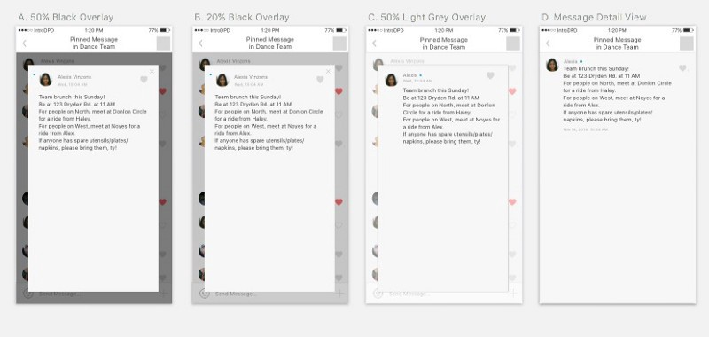Explorations of Expanded Message View
I considered having a pop-out for the expanded view of the pinned message. This placed much more emphasis on reading the pinned message and gave the interaction much more weight. While some users liked viewing the message like this, others preferred the existing view, D. In the end, I decided on D because it seemed more fitting to GroupMe’s existing ecosystem, and it still placed emphasis on the individual message because it is the only thing on the screen.
Banner Final Interaction
The Pinned Banner Message feature fits well with GroupMe’s existing ecosystem. The blue dot, message detail view, and presence in the group menu tie this feature in nicely with the current GroupMe app. The interaction is light and intuitive enough, while the colored dot instills a sense of engagement.
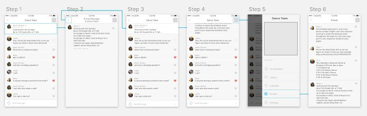2. Collapsible Pin Message
Visual Design: Alignment of Title in Collapsible
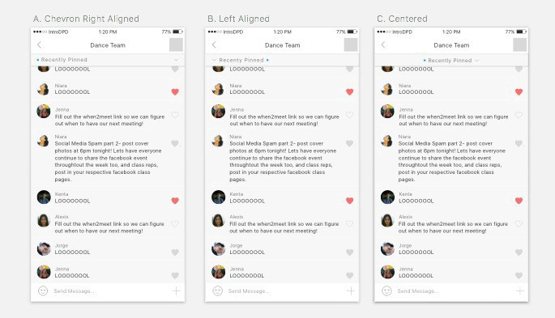Explorations of Content Alignment
Some users missed the chevron on the far right in A, and while users liked both B and C, I thought centering the title text increased its rank on the information hierarchy, which was not necessary, so I ended up sticking with B.
Content Strategy: Design to Meet the User’s Expectations
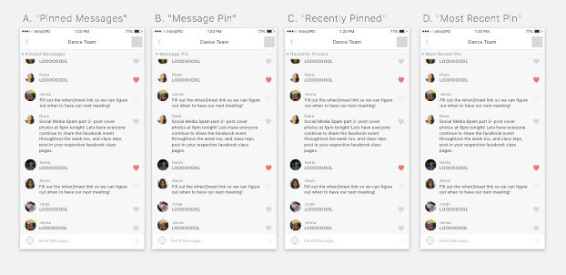Exploration of Content on Collapsible Banner
I decided that the collapsible should display only the most recently pinned message. However, I struggled to design a collapsible where the user expected only one message upon clicking it. I decided to explore different titles on the collapsible bar, and found that with D, more users had the correct expectation of the feature.
Collapsible Final Interaction
The collapsible pinned message provides an instantaneous, straightforward way to access the most recently pinned message, as well as all pinned messages. The blue dot is an intuitive indication of whether or not the most recent pin has been read by the user. While the collapsible bar is always present in the group chat, it is rather small so as to be not obstructing.
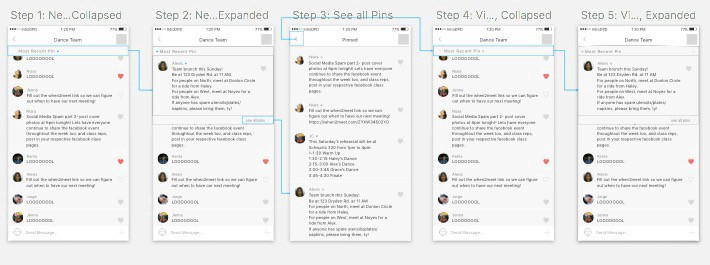Conclusion
The features addresses the two causes of the problem that I emphasized: 1) the tedious nature of scrolling and 2) the lack of organization for message content. The pinned post at the top of the group chat immediately presents the important message to the user. The ability to pin a message, in effect organizes it as more important than other messages.
The ability to mark certain messages as “Pinned” which are easily accessible to all group members would ensure that group members are well aware of important, relevant information. The Banner and Collapsible implementations provide a rather light means of organizing content without obstructing the casual, friendly feel that GroupMe groups tend to have.
Things to Consider Further
- Who has the authority to pin messages?
- Can pinned messages lose their pinned status? What happens when pinned message are no longer relevant/important?
- Can pinned messages be editable, in the case that information needs to be added on?
Understanding GroupMe Visual Design
To create believable high fidelity designs, I created a UI kit and feature specs.
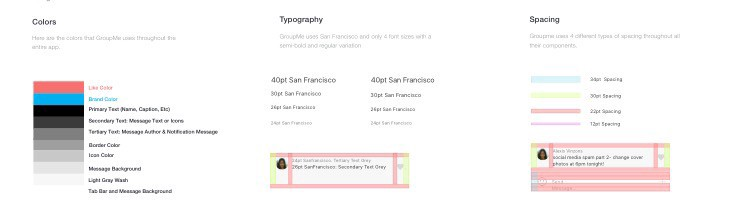 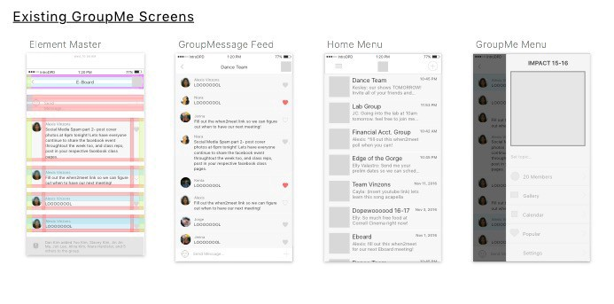 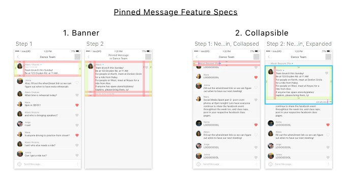This project is open source; files can be accessed via DropBox.
What I Learned
Just because it’s a problem you have doesn’t mean its one everyone has:
I was rather frustrated interviewing users who didn’t share my pain points. But that doesn’t mean they don’t have problems, it just means they have different, some-what related problems. Multiple user perspectives are much more valuable than my own opinion.The scramble for user research and testing:
On the same lines as the point before, my experience with GroupMe is not representative of all GroupMe users. I learned that I needed to go out of my way and find people for research and testing, if that meant walking across campus to test out an interaction and text/call my friends with urgency (ie. CAPITAL LETTERS).Those deadlines won’t wait for you:
I’ll admit, I struggled a bit with meeting deadlines for this assignment, and I know that even for some of the deadlines that I did meet, I didn’t produce my best work. There’s a line between submitting really bad work and iterating on really good work so much that the deadline is long gone. I learned that there comes a point when I’m going to have to click the submit button, even if I feel that I could’ve done more art board explorations on sketch, or iterated more on some designs.
Looking Forward
A lot of apps (and businesses) solve problems by pushing new features and products, but sometimes that just leads to more bloatware. It’s important to ask how GroupMe can better the experience of current users, and perhaps these solutions require simple, rather small changes.
GroupMe is a widely used platform, and because of this it has the potential to do well in the group chat app market. However, problems persist for users because groups serve different functions and users have different role within groups.
GroupMe users are spread rather thinly. And since GroupMe thrives on user activity, users with notifications turned off are of no benefit. A means of being notified about the right messages would increase engagement and better not just the productivity of the group chat, but also the harmony in communicating, and the dynamic of group interaction as a whole.
This case study is for CU App Dev’s Intro to Digital Product Design Course, and is in no way affiliated with GroupMe.
Originally published on Medium but also published here because a friend once told me, 'Own your content!'